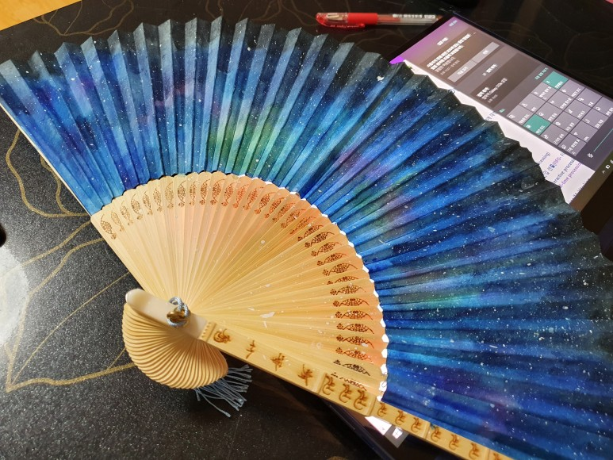
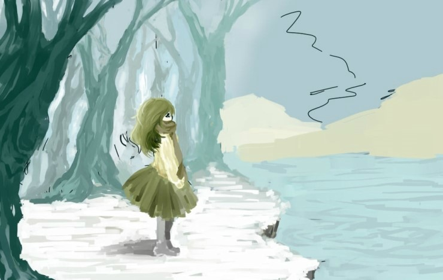
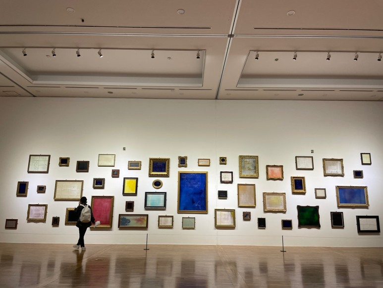
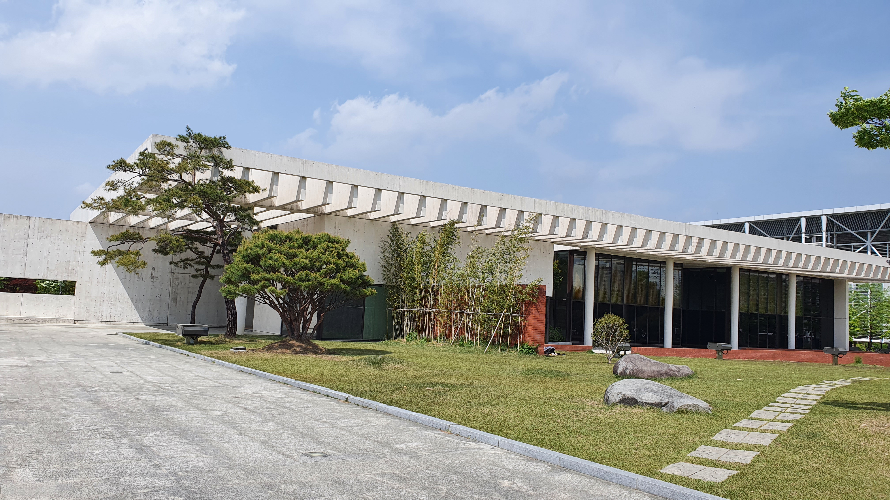

-
성장과정
어린 시절부터 고등학생 시절까지
- 지금은 없어진 충청남도 연기군에서 태어났다.
- 초등학교, 중학교, 고등학교를 모두 그 곳에서 다녔다.
- 중학교 때는 미술에 관심을 가져,
3년 동안 미술부에서 그림을 그리며 여러 축제와 대회, 봉사에 참여하였다.
- 고등학생 3학년 때까지 시각디자인과의 꿈을 가지고 활동하였으나,
컴퓨터공학과로 진로를 바꾸게 되었다
대학 시절
- 공주대학교 컴퓨터공학과에 붙어 진학하였다.
- 입학했을 당시인 20년, 딱 코로나가 창궐하여 학교에 다니지 못하고 집에서 온라인 강의를 들었다.
- 22년도 3월, 처음으로 학교에서 대면으로 수업을 들었다.
- 학교도 대면으로 바뀌었고, 지금까지 해보지 못한 활동을 하기 위해,
현재 창업 동아리에 들어가 게임을 만드는 활동을 하고 있다.
미래의 목표
- 이제 곧 졸업하는 시기가 다가왔으나 아직 진로에 대한 구체적 목표를 정하지 못하였다.
- 한시라도 빨리 진로를 결정하고 그 길을 중점으로 공부하고자 하는 것이
이번 년도까지의 목표이다.
- 그 전까지 어학 자격증과 알고리즘 같은 기본적 능력 함양에 힘쓰고자 한다.
-
성격
긍정적인 부분
- 어떤 일이 주어졌을 때 포기하지 않고 끝까지 책임지고 끝을 보는 성격
- 타인과의 소통을 중요시하여 다른 사람의 의견과 관점을 존중하여
의견이 다르더라도 서로 합의점을 찾아갈 수 있도록 최대한 노력하는 점
부정적인 부분
- 어떤 한 분야에 관심을 가져 열정적으로 공부하더라도,
그 관심이 금방 수그러드는 성격이다.
- 열정적으로 나서서 활동하기 보단, 수동적인 경향이 강한 편이다.
-
취미
유튜브
- 유튜브를 통해 개발이나 IT와과 관련된 독특한 내용이 있다면
영상을 보며 새로운 내용을 익히거나, 직접 따라해본다.
- 먹는 것과 관련한 유튜브를 보는 것을 좋아한다.
미술, 창작활동
- 가끔 머리가 복잡해질 때면 수채화를 통해 그림을 그리면
속이 차분해지고 맑아지는 효과가 있다. 중학교 때부터 유구하게 지켜오는 취미이다.


- 분기마다 미술관에 방문하여 예술과 문화에 대한 최근의 스타일과 시대를 탐색한다.
작가마다 다른 예술적인 감성을 비교하며 보는 것이 은근 재미지다.


여행
- 가족들과 함께 여행을 가는 것을 좋아한다.
- 후에 돈을 모은다면 부모님과 아이슬란드 여행을 하고 싶다.
-
고민
진로에 관한 고민
- 앞으로 곧 졸업일 텐데 딱히 유별나게 잘 하는 것도 없고,
지금까지 한 것도 없어 많이 걱정이다.
뭐를 공부해야 할 지도, 뭐부터 공부해야 할 지도 길을 잘 모르겠는 것이 조금 많이 혼란스럽다.